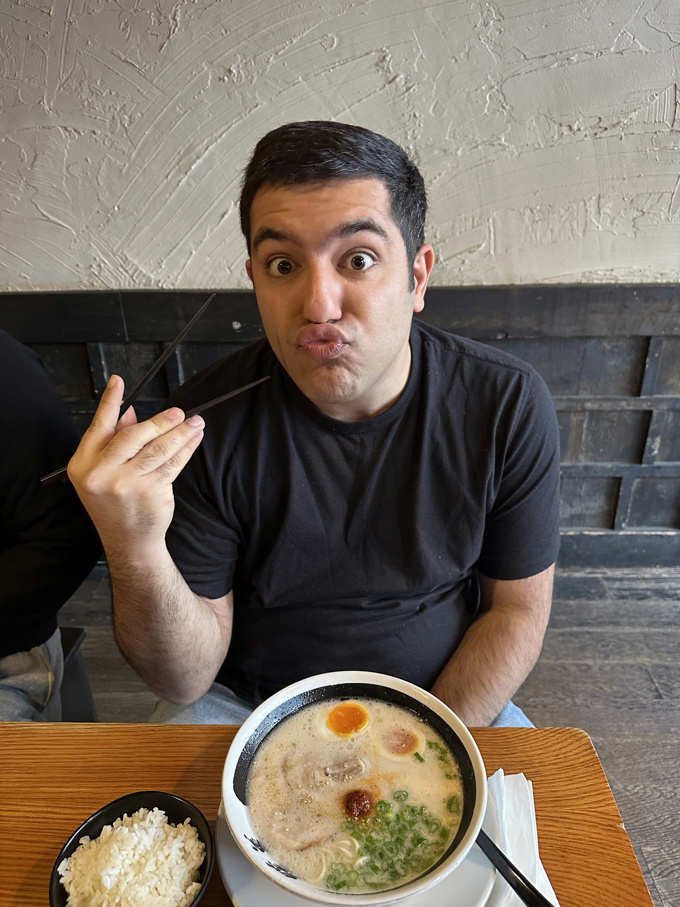
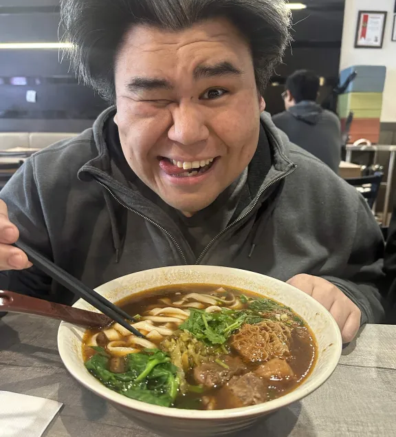

Top Reviews
The Four Fellows Food Fantasy's top picks!

Navid's Top Pick
Score: 5 / 5
This place was a top pick for me because I love noodles and this place provided nice chewy noodles and flavourful broth!
The service was excellent, professional, and quick as we came in at a good time. Ramen Danbo always has a line up, so make sure you get there before the rush. They even provided noodle refills for a cheap price! My only gripe was that I had to ask for a fork.

Dan's Top Pick
Score: 4.5 / 5
So picture this, you walk into an establishment with some expectations and then once I had taste of that beef noodle soup I was sold.
Once I had a sip of the broth mixed with the succulent meat and sliced noodles this immediately shot up to the top of my list. From what we have had, though later, this has surpassed my expectations and I not excitedly anticipate my bowl coming every time I go there.

Tyler's Top Pick
Score: 4.3 / 5
Ramen is one of my favourite foods to eat. Ramen Danbo is known to be packed throughout the day, so this was a must try on my list.
While ramen Danbo isn't any thing fancy, the food was spectacular for the price. This spot is must cheaper compared to its competitors yet it still competes when it comes to taste. I would recommend this to anyone who is Downtown during lunch to beat the busy dinners!

Benny's Top Pick
Score: 4.4 / 5
My top pick was Kita No Donburi. I ordered the katsu curry and it reminded me of Japan!
Whenever I walk pass this restaurant it always seems to be full of people during lunch. Finally, when we decided to eat there it was a decision we did not regret. The Japanese curry was full of flavour and went really well with the katsu and rice. They even had pickled red peppers.

Restaurant Name 3
Score: 4 / 5
Our third pick still deserves a place on the top reviews page because it offers a good dining experience with enjoyable food and a pleasant environment. It had some strong points that made it stand out from many other places we visited.
While it was not as complete as the first two restaurants, it still performed well in taste, service, and presentation. It is a solid choice for anyone who wants to try a reliable restaurant in Downtown Vancouver.